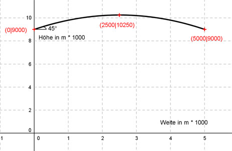

Aufgabe 126 Mit Parabelflügen kann man Schwerelosigkeit simulieren. Dazu wird ein Flugzeug unter einem Winkel von 45° auf eine Höhe von 9000 m gebracht, dann der Schub so reduziert, dass das Flugzeug erst noch steigt, aber nach 5000 m wieder auf 9000 m gesunken ist. Danach erhöht der Pilot den Schub, damit es nicht abstürzt. Auf welche maximale Höhe steigt es unter diesen Bedingungen?  Allgemeine Form einer Funktionsgleichung 2. Grades: f(x) = ax2 + bx + c f’(x) = 2ax + b 3 Bedingungen: 1. Geht durch den Punkt (0|9000) bedeutet: f(0) = 9000 --> a * 02 + b * 0 + c = 9000 --> c = 9000 2. Hat im Punkt (0|9000) die Steigung 1 (tan 45° = 1) bedeutet: f’(0) = 1 --> 2a * 0 + b = 1 --> b = 1 3. Geht durch den Punkt (5000|9000) bedeutet: (c = 9000 und b = 1 eingesetzt) f(5000) = 9000 --> a * 50002 + 1 * 5000 + 9000 = 9000 |-9000 --> a * 50002 + 1 * 5000 = 0 |:5000 a * 5000 + 1 = 0 |-1 a * 5000 = - 1 |:5000 1 a = - ------- = -0,0002 5000 f(x) = -0,0002x2 + x + 9000 Berechnung des Maximums: f’(x) = 0 f’(x) = 2 * -0,0002x + 1 = 0 |-1 -0,0004x = -1 | :(-0,0004) x = 2500 m Das heißt, die maximale Höhe tritt genau in der Mitte auf und beträgt: f(2500) = -0,002 * 2500² + 1 * 2500 + 9000 = -1250 + 2500 + 9000 = = 10250 m